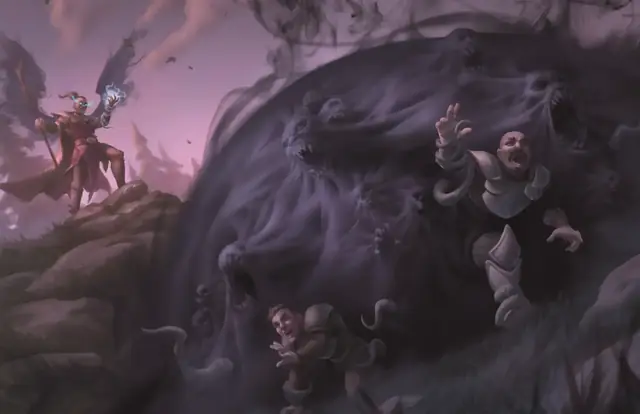

Голод Хадара
Hunger of Hadar
3 уровень, Призыв

Время сотворения Действие
Дистанция 150 футов
Компоненты В, С, М (маринованное щупальце)
Длительность Концентрация, вплоть до 1 минуты
Классы Колдун
Подклассы Великий Древний (Колдун), Аберрантное чародейство (Чародей), Теневое чародейство (Чародей)
Вы открываете врата в Дальний Предел, населённое неописуемыми кошмарами место: появляется Сфера радиусом 20 футов с центром на точке в пределах дистанции, полная Темнотой и существующая, пока действует заклинание. Эта Сфера — Труднопроходимая область, полная какофонии неясных шёпотов и хлюпающих шумов, слышимых в пределах 30 футов от Сферы. Свет, магический или немагический, не может осветить эту область, и существа, полностью находящиеся в ней, имеют состояние Ослеплённый.
Каждое существо, начинающее ход в этой области, получает 2к6 урона Холодом. Каждое существо, заканчивающее ход в этой области, должно преуспеть в спасброске Ловкости или получить 2к6 урона Кислотой от потусторонних щупалец.
Используя ячейку заклинания большего уровня. Урон Холодом или урон Кислотой (на ваш выбор) увеличивается на 1к6 за каждый уровень ячейки выше 3-го.